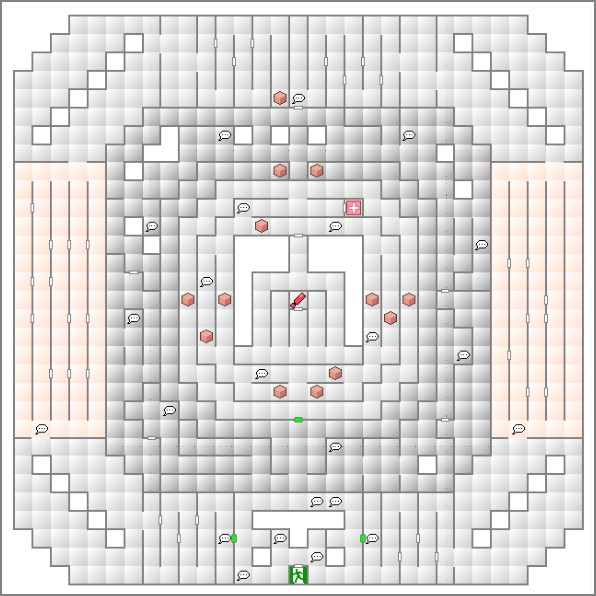

- 진행
- 보상
- 보스 정보
- 요목 옴로파스 (妖樹オムロパス)
진행

- 입구 부근: 특정 시기만 진입 가능
- 중앙 부근: 신월일 때만 통과 가능
패러다임X의 영화관에 가서 'VR 파크'에 패스워드를 입력하고 들어가자. 시나리오 진행과 관계 없지만, 여기서 '향'을 두 개 입수할 수 있다. 이 VR 파크는 DISC 2 중반까지 진입할 수 있다.
워프가 되는 구역은 오토 맵을 잘 보고 벽을 뛰어 넘어 가면서 앞으로 나아가면 통과할 수 있다. 다크존에서도 벽을 뛰어 넘어야 진행 가능하다.
중앙 에리어에는 신월일 때만 들어갈 수 있기 때문에 월령에 맞춰서 진행하자. 내부에서 아이템을 입수할 수 있다.
더욱 안쪽으로 들어가 보면
보스:요목 옴로파스가 있다. 화염 마법이 잘 통하고, 기술에 약하다. 쓰러뜨리면 파크 밖으로 나오게 된다.
보상
| VR 파크 |
| 反魂香 |
| ディストーン |
| ディスポイズン |
| 見晴らしの玉 |
| 運の香 |
| 魔反鏡 |
| 知恵の香 |
| 物反鏡 |
| ソーマ |
| スタングレネード |
| チャクラポット |
| チャクラポット |
| ダイアモンド |
| 빈 상자 |
보스 정보
요목 옴로파스 (妖樹オムロパス)
| LV |
30 |
힘 |
08 |
물리공격 |
076 |
マハ・ラギオン |
| HP |
2737 |
지혜 |
07 |
물리명중 |
046 |
悪魔の産声 |
| MP |
302 |
마력 |
11 |
마법공격 |
094 |
ネクロ・ドグマ |
|
|
내력 |
06 |
마법명중 |
024 |
バリアントダンス |
|
|
속도 |
12 |
기본방어 |
088 |
臭い息 |
|
|
운 |
03 |
회피능력 |
046 |
|
| 화염 |
빙결 |
전격 |
충격 |
파마 |
주살 |
만능 |
| 정신 |
신경 |
마력 |
타격 |
참격 |
기술 |
총격 |
| 100 |
50 |
50 |
50 |
무효 |
무효 |
100 |
| 무효 |
무효 |
무효 |
50 |
100 |
200 |
50 |